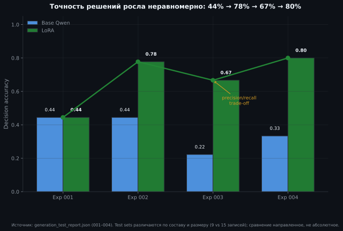
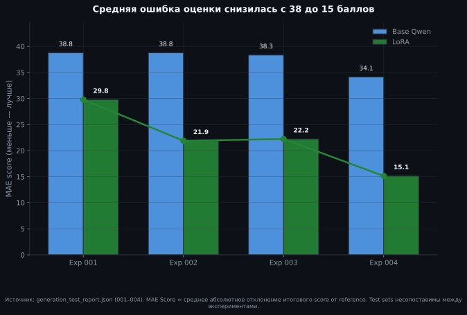
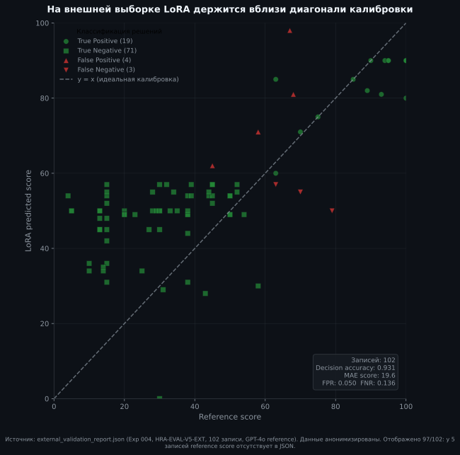
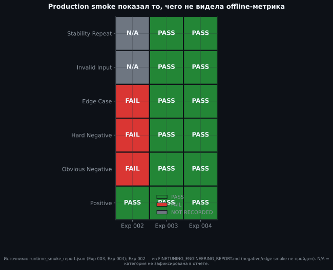
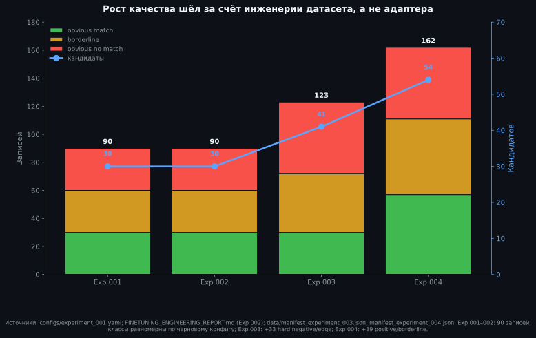
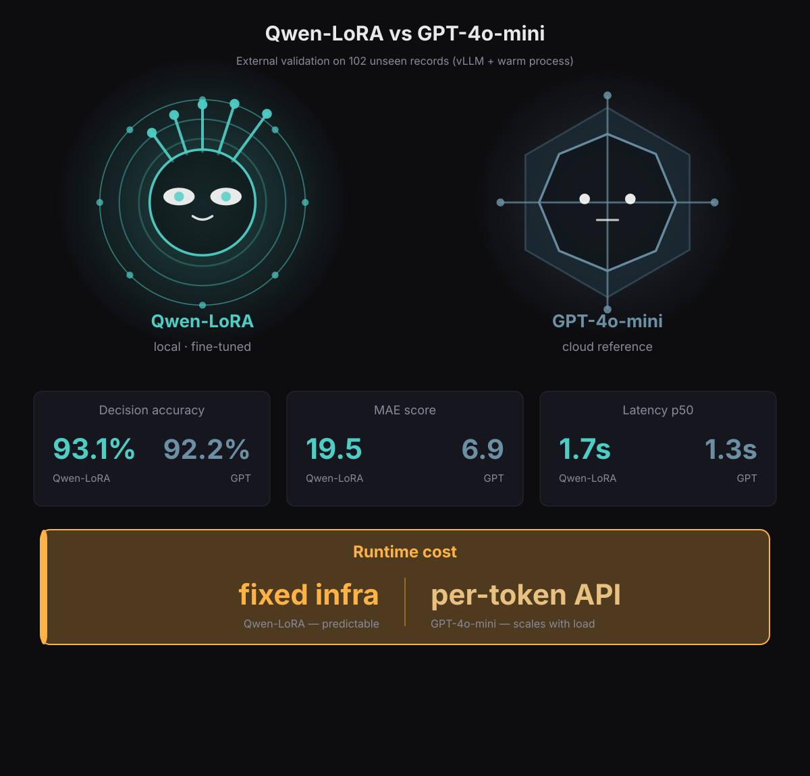

HR Assistant — от облачного API к собственной модели
Замена облачного API с оплатой за inference на локальную модель на фиксированной инфраструктуре — без критической потери качества HR-matching.
на внешней выборке
на собственном железе
teacher dataset
Почему вообще думать о собственной модели?
Production-модель HR Assistant работала на облачном API. Каждый inference оплачивался отдельно. Масштабирование означало рост переменных расходов и зависимость от внешнего провайдера.
- Быстрый старт без собственной инфраструктуры
- Расходы растут с нагрузкой: платишь за каждый запрос
- Данные уходят на внешний сервис
- Меньше контроля над поведением и latency
- Данные не покидают инфраструктуру
- Предсказуемые расходы, не зависящие от количества запросов
- Быстрые итерации под свой домен (~3 мин на пересборку)
- Инженерный контроль overfitting и quality gates
Валидный JSON ещё не значит правильный ответ
Базовая Qwen2.5 выдавала корректный JSON, но принимала плохие matching-решения. Без дообучения экономия на токенах обернулась бы потерями от ошибок.
- Формат ≠ смысл. Модель выучила JSON-шаблон, но не логику решений.
- Переход требует инвестиций. Без дообучения локальная модель обошлась бы дороже облачной.
Четыре эксперимента — оценка рисков перехода
Каждый эксперимент проверял один шаг к отказу от облачного API. Гиперпараметры LoRA не менялись — менялся только датасет.

Decision accuracy по четырём экспериментам. Offline-метрики растут неравномерно, production-риск открывается в smoke.
Какие метрики нужны, чтобы доверить переход?
Без объективных показателей локальная модель не может считаться альтернативой облачному API.
- Decision accuracy — доля правильных matching-решений.
- MAE score — точность калибровки композитной оценки.
- Valid JSON — базовый контракт API.
Точность решений: 44% → 78% → 67% → 80%. Падение на Exp 003 — жертва recall ради устойчивости к hard negatives.

MAE score снизился с 38 до 15 баллов. Модель калибрует оценку, а не только принимает решения.
Почему offline-метрик недостаточно?
Бизнес не может принимать решение по offline-метрикам. В Exp 002 высокие показатели провалили runtime smoke — нужны gates вне тестового набора.
на 102 записях
тот же датасет
ниже, чем у GPT
- Offline-метрики врут. Лучший eval loss в Exp 001 совпал с худшей accuracy.
- External validation проверяет обобщение на независимом judge.
- Runtime smoke ловит failure modes вне тестовой выборки.

External validation scatter: LoRA против reference score. Локальная модель держится рядом с облачным эталоном на незнакомых данных.
Может ли локальная инфраструктура обслуживать запросы?
Качественная модель не заменит облачный API, если отвечает по 10 секунд или падает на длинных входах. Production-готовность — условие fixed infrastructure.
Exp 003–004 passed
- Hard negatives в Exp 003 устранили failed smoke.
- Truncation bug: max_tokens=512 + graceful JSON extraction.
- vLLM сократил latency до production-acceptable диапазона.

Production smoke matrix по категориям и экспериментам. Exp 003–004 проходят 7/7.
Dataset engineering важнее тюнинга модели
Все четыре эксперимента использовали одинаковые гиперпараметры LoRA. Рост качества получен не адаптером, а составом teacher dataset.
- Гиперпараметры LoRA оставались неизменными.
- Hard negatives убили false positives; positives вернули recall.

Эволюция состава teacher dataset и метрик. Контролируемая переменная — только данные.
При каких условиях fixed infrastructure — реальная альтернатива?
Четыре эксперимента и валидация дали понимание границ: что доказано, что частично и что требует следующего цикла.
Доказано
Инженерия датасета важнее тюнинга адаптера. Hard negatives и positives/borderlines — рабочие рычаги качества.
Частично доказано
93.1% decision accuracy на external holdout и 100% production smoke pass. Production-acceptable latency после vLLM.
Next cycle
Калибровка score, stratified evaluation и real-world smoke set.

Qwen-LoRA 93.1% vs GPT-4o-mini 94.1% decision accuracy на external validation. Вопрос больше не технический, а экономический.